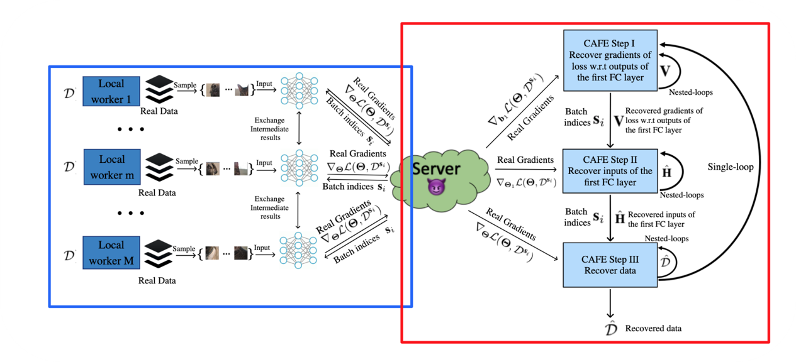

Group Highlights

This paper introduces Stochastic Compositional Optimization, a generalization of classic stochastic optimization to minimize compositions of functions with nested expectations. The proposed Stochastically Corrected Stochastic Compositional gradient (SCSC) method guarantees convergence at the same rate as SGD for non-compositional stochastic optimization and achieves state-of-the-art performance, particularly when combined with the Adam optimization technique. SCSC is applied and tested in various tasks, including model-agnostic meta-learning and risk-averse portfolio management.
T. Chen, Y. Sun, W. Yin

The paper highlights the risk of private data leakage in distributed machine learning systems like federated learning, through the gradients sharing mechanism. It challenges the defense strategy of increasing batch size to prevent data recovery and introduces a new data leakage attack called "catastrophic data leakage in vertical federated learning" (CAFE). The proposed attack efficiently recovers batch data from shared aggregated gradients. The study demonstrates CAFE's effectiveness in performing large-batch data leakage attacks with improved data recovery quality. The paper also suggests a practical countermeasure to mitigate CAFE and emphasizes the high risk of private data leakage in standard federated learning settings, particularly in vertical cases.
X. Jin, P. Chen, C. Hsu, C. Yu, T. Chen

The paper introduces a novel optimization method called SingleTimescale stochAstic BiLevEl optimization (STABLE) for stochastic bilevel optimization, where the objective depends on the solution of another optimization problem. STABLE uses a single-loop fashion with a fixed batch size, achieving similar sample complexity as stochastic gradient descent (SGD) for single-level optimization. For e-stationary point, it requires O(e^(-2)) samples, and for e-optimal solution in strongly convex cases, O(e^(-1)) samples. STABLE is the first bilevel optimization algorithm with comparable sample complexity to SGD.
T. Chen, Y. Sun, , Q. Xiao, W. Yin
This paper studies Model-Agnostic Meta Learning (MAML) through the lens of Sharpness-Aware Minimization. We propose Sharp-MAML, a new approach developed to optimize MAML effectively, tackling its complex loss landscape with numerous saddle points and local minimizers. By leveraging sharpness-aware minimization, Sharp-MAML outperforms the plain-vanilla MAML baseline, achieving a notable increase in accuracy on Mini-Imagenet (e.g., +3%). The paper provides empirical evidence, convergence rate analysis, and generalization bounds for Sharp-MAML, making it the first study of its kind in the context of bilevel learning.
M. Abbas, Q. Xiao, L. Chen, T. Chen, P. Chen
This paper explores bilevel optimization and its applications in hyper-parameter optimization, meta-learning, and reinforcement learning. It addresses the difficulty of solving bilevel problems and introduces the penalty method as a solution. The proposed penalty-based bilevel gradient descent (PBGD) algorithm demonstrates finite-time convergence for constrained bilevel problems without lower-level strong convexity. Experimental results showcase the efficiency of PBGD, highlighting its potential for scalable bilevel optimization in various scenarios.
H. Shen, Q. Xiao, T. Chen

This study focuses on Multi-objective learning (MOL) problems, where multiple learning criteria or tasks are present. Dynamic weighting algorithms like MGDA aim to find update directions that avoid conflicts among objectives. However, empirical findings show that dynamic weighting methods might not consistently outperform static ones. This work delves into a stochastic variant of MGDA called MoDo, exploring its generalization performance and the interplay with optimization. Surprisingly, it reveals that the key rationale behind MGDA could hinder dynamic weighting algorithms from achieving the optimal O(1/√n) population risk, leading to unique trade-offs in MOL.
L.Chen, H. Fernando, Y. Ying, T. Chen, P. Chen
Representative/Recent Works
On Penalty-based Bilevel Gradient Descent Method
H. Shen, Q. Xiao and T. Chen
Proc. of International Conference on Machine Learning (ICML), Honolulu, HI, July 22-29, 2023.
Tighter Analysis of Alternating Stochastic Gradient Method for Stochastic Nested Problems
T. Chen, Y. Sun and W. Yin
Proc. of Neural Information Processing Systems (NeurIPS), Virtual, December 6-14, 2021. (Spotlight)
Is Bayesian Model-Agnostic Meta Learning Better than Model-Agnostic Meta Learning, Provably?
L. Chen and T. Chen
Proc. of Intl. Conf. on Artificial Intelligence and Statistics (AISTATS), Virtual, March 28 - 30, 2022.
Solving Stochastic Compositional Optimization is Nearly as Easy as Solving Stochastic Optimization
T. Chen, Y. Sun and W. Yin
IEEE Transactions on Signal Processing, vol. 69, pp. 4937-4948, June 2021.
The conference version has received the 2021 ICASSP Best Student Paper Award.
Catastrophic Data Leakage in Vertical Federated Learning
X. Jin, P.-Y. Chen, C.-Y. Hsu, C.-M. Yu, and T. Chen
Proc. of Neural Information Processing Systems (NeurIPS), Virtual, December 6-14, 2021.
LAG: Lazily Aggregated Gradient for Communication-Efficient Distributed Learning [Talk], [Poster], and [Code]
T. Chen, G. B. Giannakis, T. Sun and W. Yin
Proc. of Neural Information Processing Systems (NeurIPS), Montreal, Canada, December 3-8, 2018. (Spotlight)
Dissertation
- Efficient Methods for Distributed Machine Learning and Resource Management in IoT
Ph. D. Dissertation, University of Minnesota, Twin Cities, June 2019.
2020 IEEE Signal Processing Society Best PhD Dissertation Award.
Journal papers
Towards Understanding Asynchronous Advantage Actor-critic: Convergence and Linear Speedup
H. Shen, K. Zhang, M. Hong and T. Chen
IEEE Transactions on Signal Processing, vol. 71, to appear, July 2023.
Adaptive Temporal Difference Learning with Linear Function Approximation
T. Sun, H. Shen, T. Chen and D. Li
IEEE Transactions on Pattern Analysis and Machine Intelligence, to appear, 2021.
LASG: Lazily Aggregated Stochastic Gradients for Communication-Efficient Distributed Learning
T. Chen, Y. Sun and W. Yin
IEEE Transactions on Signal Processing, vol. 69, pp. 4637 - 4651, July 2021.
Solving Stochastic Compositional Optimization is Nearly as Easy as Solving Stochastic Optimization
T. Chen, Y. Sun and W. Yin
IEEE Transactions on Signal Processing, vol. 69, pp. 4937 - 4948, June 2021.
Byzantine-Resilient Decentralized TD Learning with Linear Function Approximation.
Z. Wu, H. Shen, T. Chen, and Q. Ling
IEEE Transactions on Signal Processing, vol. 69, pp. 3839 - 3853, June 2021.
Communication-Efficient Policy Gradient Methods for Distributed Reinforcement Learning
T. Chen, K. Zhang, G. B. Giannakis, and T. Başar
IEEE Transactions on Control of Network Systems, to appear, 2021.
Lazily Aggregated Quantized Gradient Innovation for Communication-Efficient Federated Learning
J. Sun, T. Chen and G. B. Giannakis, Z. Yang
IEEE Transactions on Pattern Analysis and Machine Intelligence, to appear, 2021.
Federated Variance-Reduced Stochastic Gradient Descent with Robustness to Byzantine Attacks
Z. Wu, Q. Ling, T. Chen and G. B. Giannakis
IEEE Transactions on Signal Processing, vol. 68, pp. 4583-4596, December 2020.
Secure Mobile Edge Computing in IoT via Collaborative Online Learning
B. Li, T. Chen and G. B. Giannakis
IEEE Transactions on Signal Processing, vol. 67, no. 23, pp. 5922-5935, December 2019.
Learning and Management for Internet-of-Things: Accounting for Adaptivity and Scalability
T. Chen, S. Barbarossa, X. Wang, G. B. Giannakis and Z.-L. Zhang
Proceedings of the IEEE, vol. 107, no. 4, pp. 778-796, April 2019.
Random Feature-based Online Multi-kernel Learning in Environments with Unknown Dynamics
Y. Shen, T. Chen and G. B. Giannakis
Journal of Machine Learning Research, vol. 20, no. 22, pp. 1-36, February 2019.
Real-time Optimal Energy Management with Reduced Battery Capacity Requirements
B. Li, T. Chen, X. Wang and G. B. Giannakis
IEEE Transactions on Smart Grid, vol. 10, no. 2, pp. 1928-1938, March 2019.
Bandit Convex Optimization for Scalable and Dynamic IoT Management
T. Chen and G. B. Giannakis
IEEE Internet of Things Journal, vol. 6, no. 1, pp. 1276-1286, February 2019.
Heterogeneous Online Learning for "Thing-Adaptive'' Fog Computing in IoT
T. Chen, Q. Ling, Y. Shen and G. B. Giannakis
IEEE Internet of Things Journal, vol. 5 , no. 6 , pp. 4328 - 4341, December 2018.
Learn-and-Adapt Stochastic Dual Gradients for Network Resource Allocation
T. Chen, Q. Ling and G. B. Giannakis
IEEE Transactions on Control of Network Systems, vol. 5, no. 4, pp. 1941-1951, December 2018.
Two-Scale Stochastic Control for Multipoint Communication Systems with Renewables
X. Wang, X. Chen, T. Chen, L. Huang and G. B. Giannakis
IEEE Transactions on Smart Grid, vol. 9, no. 3, pp. 1822 - 1834, May. 2018.
An Online Convex Optimization Approach to Proactive Network Resource Allocation
T. Chen, Q. Ling and G. B. Giannakis
IEEE Transactions on Signal Processing, vol. 65, no. 24, pp. 6350-6364, Dec. 2017.
Real-time Energy Trading and Future Planning for Fifth-Generation Wireless Communications
X. Chen, W. Ni, T. Chen, I. Collins, X. Wang and G. B. Giannakis
IEEE Wireless Communications Magazine, vol.24, no. 4, pp. 24-30, Aug. 2017.
Stochastic Averaging for Constrained Optimization with Application to Online Resource Allocation
T. Chen, A. Mokhtari, X. Wang, A. Ribeiro and G. B. Giannakis
IEEE Transactions on Signal Processing, vol. 65, no. 12, pp. 3078-3093, Jun. 2017.
Dynamic Resource Allocation for Smart-Grid Powered MIMO Downlink Transmissions
X. Wang, T. Chen, X. Chen, X. Zhou and G. B. Giannakis
IEEE Journal on Selected Areas in Communications, Vol. 34, No. 12, pp. 3354 - 3365, Dec. 2016.
Robust Workload and Energy Management for Sustainable Data Centers
T. Chen, Y. Zhang X. Wang, and G. B. Giannakis
IEEE Journal on Selected Areas in Communications, Vol. 34, No. 3, pp. 651-664, Mar. 2016.
Cooling-Aware Energy and Workload Management in Data Centers via Stochastic Optimization
T. Chen, X. Wang and G. B. Giannakis
IEEE Journal on Special Topics in Signal Processing, Vol. 10, No. 2, pp. 402-415, Mar. 2016.
Optimal Scheduling for Wireless On-Demand Data Packet Delivery to High-Speed Trains
T. Chen, H. Shan and X. Wang
IEEE Transaction on Vehicular Technology, Vol. 64, No. 9, pp. 4101 - 4112, Sept. 2015.
Optimal MIMO Broadcasting for Energy Harvesting Transmitter with Non-ideal Circuit Power Consumption
X. Wang, Z. Nan and T. Chen
IEEE Transaction on Wireless Communication, Vol. 14, No. 5, pp. 2500 - 2512, May 2015.
Selected Conference papers (not updated)
On Penalty-based Bilevel Gradient Descent Method
H. Shen, Q. Xiao and T. Chen
Proc. of International Conference on Machine Learning (ICML), Honolulu, HI, July 22-29, 2023.
A Nested Ensemble Method to Bilevel Machine Learning
L. Chen, M. Abbas, and T. Chen
Proc. of Intl. Conf. on Acoustics, Speech, and Signal Processing (ICASSP), Rhodes Island, Greece, June 4-10, 2023.
Mitigating Gradient Bias in Multi-objective Learning: A Provably Convergent Stochastic Approach (Oral)
H. Fernando, H. Shen, M Liu, S Chaudhury, K Murugesan and T. Chen
Proc. of Intl. Conf. on Learning Representations (ICLR), Kigali, Rwanda, May 1 - 5, 2023.
-
Q. Xiao, H. Shen, W. Yin and T. Chen
Proc. of Intl. Conf. on Artificial Intelligence and Statistics (AISTATS), Valencia, Spain, April 25 - 27, 2023.
Distributed Offline Policy Optimization Over Batch Data
H. Shen, S. Lu, X. Cui and T. Chen
Proc. of Intl. Conf. on Artificial Intelligence and Statistics (AISTATS), Valencia, Spain, April 25 - 27, 2023.
Understanding Benign Overfitting in Gradient-based Meta Learning
L. Chen, S. Lu, and T. Chen
Proc. of Neural Information Processing Systems (NeurIPS), New Orleans, LA, November 28-December 9, 2022.
A Single-Timescale Analysis For Stochastic Approximation With Multiple Coupled Sequences (Oral)
H. Shen and T. Chen
Proc. of Neural Information Processing Systems (NeurIPS), New Orleans, LA, November 28-December 9, 2022.
Sharp-MAML: Sharpness-Aware Model-Agnostic Meta Learning
M. Abbas*, Q. Xiao*, L. Chen*, P.-Y. Chen, and T. Chen
Proc. of International Conference on Machine Learning (ICML), Baltimore, MD, July 17-23, 2022.
Federated Multi-armed Bandit via Uncoordinated Exploration
Z. Yan, Q. Xiao, T. Chen and A. Tajer
Proc. of Intl. Conf. on Acoustics, Speech, and Signal Processing (ICASSP), Virtual, May 22-27, 2022.
Is Bayesian Model-Agnostic Meta Learning Better than Model-Agnostic Meta Learning, Provably?
L. Chen and T. Chen
Proc. of Intl. Conf. on Artificial Intelligence and Statistics (AISTATS), Virtual, March 28 - 30, 2022.
A Single-Timescale Method for Stochastic Bilevel Optimization (Oral)
T. Chen, Y. Sun, Q. Xiao and W. Yin
Proc. of Intl. Conf. on Artificial Intelligence and Statistics (AISTATS), Virtual, March 28 - 30, 2022.
Tighter Analysis of Alternating Stochastic Gradient Method for Stochastic Nested Problems (Spotlight)
T. Chen, Y. Sun and W. Yin
Proc. of Neural Information Processing Systems (NeurIPS), Virtual, December 6-14, 2021.
Catastrophic Data Leakage in Vertical Federated Learning
X. Jin, P.-Y. Chen, C.-Y. Hsu, C.-M. Yu, and T. Chen
Proc. of Neural Information Processing Systems (NeurIPS), Virtual, December 6-14, 2021.
A Stochastic Compositional Optimization Method with Applications to Meta Learning (Best Student Paper)
Y. Sun, T. Chen, and W. Yin
Proc. of Intl. Conf. on Acoustics, Speech, and Signal Processing (ICASSP), Virtual, June 6-11, 2021.
CADA: Communication-Adaptive Distributed Adam
T. Chen, Z. Guo, Y. Sun, and W. Yin
Proc. of Intl. Conf. on Artificial Intelligence and Statistics (AISTATS), Virtual, April 16-18, 2021.
Decentralized policy gradient descent ascent for safe multi-agent reinforcement learning
S. Lu, K. Zhang, T. Chen, T. Başar, and L. Horesh,
Proc. of the Assoc. for the Advanc. of Artificial Intelligence (AAAI), Virtual, February 2-9, 2021.
Hybrid Federated Learning: Algorithms and Implementation (Best Student Paper)
- X. Zhang, W. Yin, M. Hong, and T. Chen
Proc. of NeurIPS Workshop on Scalability, Privacy, and Security in Federated Learning, Virtual, December 12, 2020.
VAFL: a Method of Vertical Asynchronous Federated Learning
T. Chen, X. Jin, Y. Sun and W. Yin
Proc. of ICML Workshop on Federated Learning for User Privacy and Data Confidentiality, Virtual, July 17-18, 2020.
Communication-Efficient Distributed Learning via Lazily Aggregated Quantized Gradients
J. Sun*, T. Chen*, G. B. Giannakis, and Z. Yang (*equal contribution)
Proc. of Neural Information Processing Systems (NeurIPS), Vancouver, Canada, December 8-14, 2019.
Bandit Online Learning with Unknown Delays
B. Li, T. Chen, and G. B. Giannakis
Proc. of Intl. Conf. on Artificial Intelligence and Statistics (AISTATS), Naha, Japan, April 16-18, 2019.
-
L. Li, W. Xu, T. Chen, G. B. Giannakis, and Q. Ling
Proc. of the Assoc. for the Advanc. of Artificial Intelligence (AAAI), Honolulu, Hawai, January 27-February 1, 2019.
LAG: Lazily Aggregated Gradient for Communication-Efficient Distributed Learning
T. Chen, G. B. Giannakis, T. Sun and W. Yin
Proc. of Neural Information Processing Systems (NeurIPS), Montreal, Canada, December 3-8, 2018.
Spotlight talk, Poster, and Matlab code.
Online Ensemble Multi-kernel Learning Adaptive to Non-stationary and Adversarial Environments
Y. Shen*, T. Chen* and G. B. Giannakis
Proc. of Intl. Conf. on Artificial Intelligence and Statistics (AISTATS), Lanzarote, Canary Islands, April 9-11, 2018.
Online Learning for `Thing-Adaptive' Fog Computing in IoT (Best Student Paper Finalist)
T. Chen, Y. Shen, Q. Ling and G. B. Giannakis
Proc. of Asilomar Conference, Pacific Grove, CA, Oct. 29 - Nov. 1, 2017.